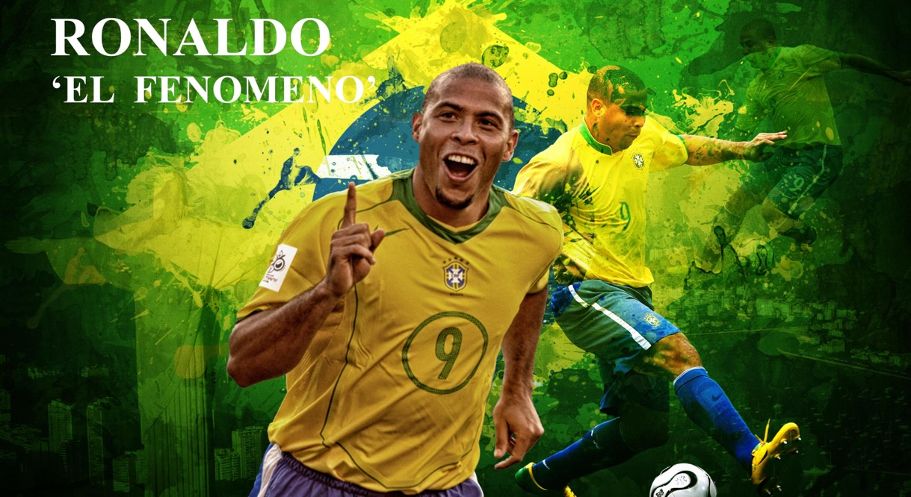

Ronaldo: El Fenomeno
The definition of a Striker

Ronaldo wearing Brazil jersey #9
- Club: On the club level while playing from Cruzeiro he won 1 Campeonato Mineiro (1994), 1 Copa do Brasil 1 (1993). While respresenting PSV Eindhoven he claimed 1 KNVB Cup 1 (1996), 1 Johan Cruijff-schaal 1 (1996). He played outstandingly for Barcelona too and held 1 Copa del Rey 1 (1997), 1 UEFA Cup Winners’ Cup (1997), 1 Supercopa de España 1 (1996). From Inter Milan he has 1 UEFA Cup (1998) whereas from Real Madrid he has 2 La Liga (2002–03 and 2006–07), 1 Intercontinental Cup (2002), 1 Supercopa de España (2003). During the time he played for Corinthians he took 1 Campeonato Paulista (2009) and 1 Copa do Brasil (2009).
- International: On international arena he won 2 FIFA World Cup (1994 and 2002), 1 FIFA World Cup: Runners-up securing 2nd Place (1998), 2 Copa América (1997 and 1999), 1 Copa América: Runners-up securing 2nd Place (1995), 1 FIFA Confederations Cup (1997), 1 Summer Olympic Games: Bronze Medal occupying 3rd Place (1996).